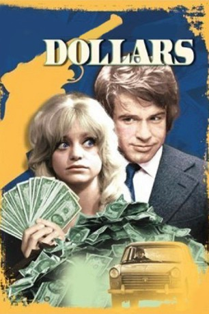
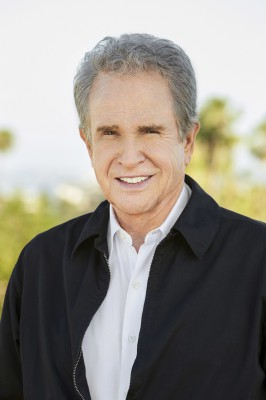
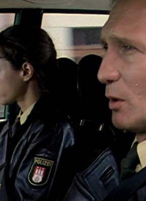

#4713 Der Millionenraub
Alternativ: $
 
 IMDB-Wertung: 6.5 / 10
IMDB-Wertung: 6.5 / 10  Metascore: 0
Metascore: 0 
Joe Collins und Dawn Divine rauben die Hamburger Filiale einer US-amerikanischen Bank aus. Unter dem Vorwand, in der Bank befände sich eine Bombe, lässt sich Collins in der Kammer mit Schließfächern einschließen. Dort öffnet er einige Schließfächer, die Geld aus illegalen Aktivitäten in den USA beinhalten und deponiert die Geldbündel im eigenen Schließfach. Währenddessen lobt ihn der Filialdirektor Herr Kessel als einen Helden.
Jahr: 1971
Dauer: 111 Minuten
FSK:
Land: USA Studio: Columbia PicturesTonspuren:
Untertitel:
Auflösung: 720p (1280x720) Größe: 5191 MB
Genre: Komödie, Krimi, Drama
Regisseur:  Richard Brooks
Richard Brooks
Drehbuch: Jieho Lee
Soundtrack:
Darsteller:
-  Warren Beatty als Joe Collins
 Goldie Hawn als Dawn Divine
Goldie Hawn als Dawn Divine Gert Fröbe als Mr. Kessel
Gert Fröbe als Mr. Kessel Robert Webber als Attorney
Robert Webber als Attorney- Scott Brady als Sarge
- Christiane Maybach als Helga
-  Arthur Brauss als Candy Man
- Robert Stiles als Major
- Wolfgang Kieling als Granich
- Bob Herron als Bodyguard
- Hans Hutter als Karl
- Monica Stender als Berta
- Horst Hesslein als Bruno
- Wolfgang Kuhlman als Furcoat
- Klaus Schichan als Knifeman
- Tove Platon als Customs
- Kirsten Lahman als Customs
- Françoise Blanc als $ Stripper
- Darrell Armstrong als Associated Press
- Walt Trott als Stars and Stripes
Datei: X:\1971\Millionenraub, Der (1971, FSK, 1280x720).mkv seit 08.11.2016
Festplatte: HD 1971-1979
 Es gibt insgesamt 28 Filme in der Gruppe '1971'
Es gibt insgesamt 28 Filme in der Gruppe '1971'